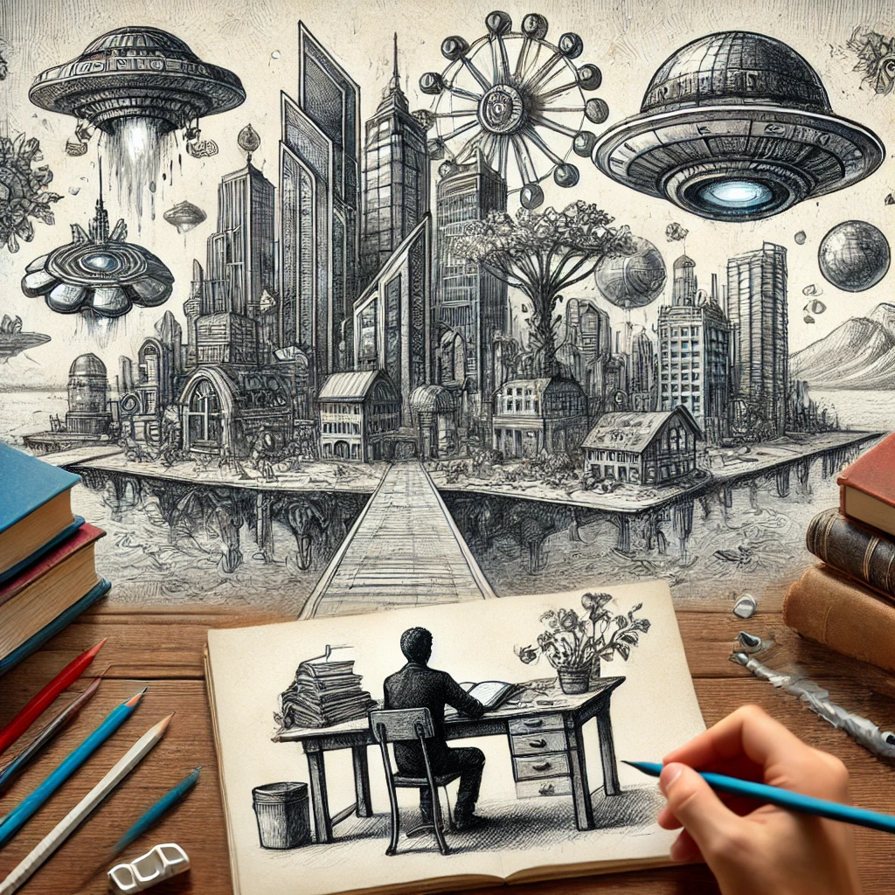

tree(나무)
목차
작가
베르나르 베르베르
출판일
2002년
감상평에 대한 AI그림
작가의 기발한 상상력이 돋보이는 sf단편집이다. 더 놀라운것은 지금 이 책 속에서 상상속 요소로 나온 것들이 지금은 현실에 존재하고 있는것이 있다는 것이다. 과거의 상상이 지금 현재 실현된 것처럼 지금의 상상도 미래에는 실현될수도 있겠다는 생각이 들었다. 또한 기발한 상상력을 바탕으로 사회에대한 비판도 섞여있는것이 인상적이었다.

감상평에 대한 AI평가
이 감상평에는 놀라움, 경이로움, 그리고 사색적인 감정이 담겨 있어.또한 경이로움과 지적 호기심, 그리고 미래에 대한 열린 시각이 반영된 글이라 볼 수 있어.
✨ 경이로움과 감탄 – 과거의 상상이 현실이 된 점에 대해 신기함과 놀라움을 표현하고 있음.
✨ 미래에 대한 기대와 가능성 – 현재의 상상도 언젠가 실현될 수 있다는 희망적인 시각이 보임.
✨ 비판적 사고와 통찰 – 단순한 SF적 상상력을 넘어서, 사회에 대한 비판적 메시지를 읽어내고 이에 대한 인상을 깊게 남긴 점에서 사색적인 태도가 느껴짐.